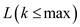
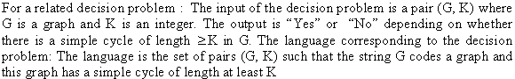
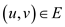
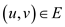
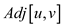
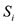
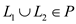
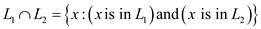
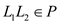

Suppose that a polynomial time taken to solve the LONGEST-PATH-LENGTH problem:
Suppose denotes an
algorithm for LONGEST-PATH-LENGTH problem. Now consider the
following algorithm to decide
the LONGEST-PATH.
denotes an
algorithm for LONGEST-PATH-LENGTH problem. Now consider the
following algorithm to decide
the LONGEST-PATH.
Algorithm:
Input: The inputs taken are
Output: Here, the output will be “No” or “Yes”.
1.
2.  ;
;
3. if then
4. return “Yes”
5. else
6. return “No”
Since, denotes an
algorithm for LONGEST-PATH-LENGTH problem, it takes a polynomial
time to run. In the above algorithm, simply calls
the then the
algorithm will also
take a polynomial running time.
Suppose that a polynomial time taken to decide the LONGEST-PATH:
Suppose algorithm takes a
polynomial time to decide the LONGEST-PATH. Now, consider the
following algorithm to solve the
LONGEST-PATH-LENGTH problem.
Algorithm:
Input: The inputs taken are
Output: Here, the output will be the size of the longest
path exists between the vertices  and
and
 or
return -1 if there exists no path between these vertices.
or
return -1 if there exists no path between these vertices.
1.
2.
3. while () and
 =false
=false
4. do
5.
6. return  ;
;
Now consider the above algorithm. Here, the algorithm are called
at most  times and
also some polynomial number of steps. Since, the algorithm takes a
polynomial running time, then the algorithm will also be
run in polynomial time.
times and
also some polynomial number of steps. Since, the algorithm takes a
polynomial running time, then the algorithm will also be
run in polynomial time.
Hence, from the above explanation, a polynomial time can be used to solve the optimization problem LONGEST-PATH-LENGTH if and only if LONGEST-PATH.

A formal encoding of directed graphs as binary strings using an adjacency matrix representation:
Directed graph is the
graph in which every edge is represented in the form of arrow from
one vertex to another, that is edge has an arrow
from u to v.
is the
graph in which every edge is represented in the form of arrow from
one vertex to another, that is edge has an arrow
from u to v.
Adjacency-matrixrepresentation of a graph is the representation of graphs in the form of a matrix by using 0, if there is no edge between vertices and 1, if there is a directed edge from one vertex to another.
Consider the following directed graph G to calculate the formal encoding as a binary string:
• To calculate first row of the Adjacency matrix, there is the directed edge from 1 to 2 and 1 to 5 vertices, therefore, put the value 1 and put 0 for the rest of vertices.
• For second row, there is the directed edge from 2 to 3 and 2 to 5 vertices, therefore, put the value 1 of them and put 0 for the rest of the vertices.
• Similarly the complete matrix can be calculated.
The final Adjacency matrix representation is shown below in the form of the binary string:
|
1 |
2 |
3 |
4 |
5 |
|
|
1 |
0 |
1 |
0 |
0 |
1 |
|
2 |
0 |
0 |
1 |
0 |
1 |
|
3 |
0 |
0 |
0 |
1 |
0 |
|
4 |
0 |
0 |
1 |
0 |
0 |
|
5 |
0 |
1 |
1 |
1 |
0 |
This matrix-form of graph could be encoded as:
0 1 0 0 1 0 0 1 0 1 0 0 0 1 0 0 0 1 0 0 0 1 1 1 0
Taking the square root of the number of bits will return the capacity of the square matrix.
Thus, directed graphs can be represented as binary strings using an adjacency matrix using bits.
A formal encoding of directed graphs as binary strings using an adjacency List representation:
In the adjacency-list form of a graphwith
directional edges,  numbers of
lists are created. One list is created for each vertex and for
every vertex is added to
the list of vertex v if there is an edge from v to
that vertex.
numbers of
lists are created. One list is created for each vertex and for
every vertex is added to
the list of vertex v if there is an edge from v to
that vertex.
Initially, the number of bits required to represent the graph using adjacency list seems very high. This is because of the following:
• Each vertex has to be represented in binary for which a list of adjacent vertices has to be created.
• The list for each vertex then consists of the binary equivalents representing each adjacent vertex.
To minimize the number of bits required to encode all this, an ASCII text files can be used in which each line number represent a vertex, followed by the binary equivalents of the vertices it is connected to.
Using the above algorithm to find the adjacency list representation of the directed graph G is calculated as (See below Figure):
• List all the vertices connected to a vertex.
• Now list is stored in an ASCII file
|
1 |
2 |
5 |
|
|
2 |
3 |
5 |
|
|
3 |
4 |
||
|
4 |
3 |
||
|
5 |
4 |
2 |
3 |
Since, only the edges are represented in binary and the vertex
doesn’t have to be represented as the line number of the ASCII
clearly shows the vertices, therefore, the binary representation of
adjacency list takes space of the order. And
total number of adjacency lists is .
Thus, directed graphs can be represented as binary strings using an adjacency list using lists and a total of binary strings.
To prove that the adjacency matrix and the adjacency list representations are polynomially related, it has to be shown that these representations can be transformed from one form to another in polynomial time.
CONVERT_M_TO_L(M):
1. For every row of the adjacency matrix, repeat the following two steps:
2. Scan from left to right.
3. Add the column number to the adjacency list if value = 1.
Since, 1 represents that there is a link between the two vertices, therefore, when 1 is encountered, add the column number to the adjacency list.
Conversion of adjacency list to adjacency matrix:
CONVERT_L_TO_M(L):
1. Initialize the matrix M with all 0’s
2. Initialize i with the line number, and then for each line repeat the following:
3. If a is seen, do the following:
4. Put 1 at
Each entry in the adjacency list corresponds to a link. So whenever an entry is encountered, add 1 to the matrix.
The following two observations are made from the above two procedures:
• CONVERT_M_TO_L requires reading the entries of a matrix and writing into an ASCII file.
• CONVERT_L_TO_M requires reading the lines from an ASCII file and writing into a matrix.
Operation involving full read/write of a matrix is usually of
the order of polynomial time. Typically it is of order .
.
Since, the two representations are transformable to each other in polynomial time; therefore, these two representations are polynomially related.
If a problem can be solved by an algorithm in at most O(nk) time for some integer k, then the problem is called polynomial-time solvable problem and the algorithm is called the polynomial-time algorithm. That is, if n is the size of the input to the polynomial algorithm, then the running time of the algorithm is the order of a polynomial of n.
• The dynamic 0-1 knapsack algorithm described in 16.2-2 takes
 time to solve the knapsack problem. Where n is the number of
items and W is the capacity of the knapsack.
time to solve the knapsack problem. Where n is the number of
items and W is the capacity of the knapsack.
• The dynamic 0-1 knapsack algorithm is not a polynomial time algorithm, since the value W is not depends on the input size n. That is, we can’t express the algorithm time such that nW=nk, because the length of the W is not a polynomial of n.
• Since the length of the W is proportional to, the time complexity is
• Here, is an exponential time, but not a polynomial time.
Therefore, the dynamic 0-1 knapsack algorithm is not a polynomial-time algorithm, but it is NP-Complete. Also dynamic 0-1 knapsack algorithm is a pseudo-polynomial time algorithm.
The proof to approach the problem is as follows:
• Take an input data of size n and keep the count of the number of subroutines.
• The subroutine takes the data of size n as input and returns the output.
• After returning from a subroutine, any other input can be given to the next subroutine.
• Let the subroutine be  with the
input  having
length as
having
length as  . Let the
number of operations performed on the input of size n be , where
does not depend on the size of input n.
. Let the
number of operations performed on the input of size n be , where
does not depend on the size of input n.
Using Induction: Let the upper bound be for the running time of the algorithm on the input of size n.
o Then, the total running time of the algorithm for the input of size n is given as follows:
o Here, does not depend upon the value of the input. Let there be a quantity which does not depend upon the size of input.
o Base case: For i=1, the base case is proved.
o Other cases: For i-1, assume that , then the output size of the subroutine is , so on solving further the input size becomes .
Thus, the total running time becomes:
Hence, it can be concluded that the algorithm runs in polynomial time.
To show that a polynomial number of calls to the polynomial time subroutine takes exponential time, the approach is as follows:
Here, the output of the subroutine is twice the size of the input and this subroutine is called n times.
Start from the input of size 1 and use the previous output back
into the subroutine. Each subroutine has the
running time of for the
input of size n. Thus, the final output size will be  .
.
Thus, it can be concluded that the algorithm takes exponential time.
Consider that are two languages in P and the algorithmsrepresents the algorithms that are executable in polynomial time. Then for the operations on these languages a new algorithmis constructed that decides these operations as polynomial time. The union of two languages is defined as:
.
The algorithmfor the union of two languages is as:
Algorithm
1. if
2. return 1
3. else
return 0
• 
This is so because we can decide if depending on whether and then; If either holds, then otherwise.
Here two languages L1 and L2, both are in P and a union operation is the collection of every element which is present in either L1 or L2. So, a new language, which is a collection of the union operation, must be in P because every subpart of this language is going to fall in P.
The intersection of two sets contains the common elements from both the sets it is as:

The algorithm for the intersection of two languages is as:
Algorithm
1. if
2. return 1
3. else
return 0
•
The above can be concluded when we can decide if and also ; If both hold then otherwise .
Here, two languages L1 and L2, both are in P and an intersection operation is the collection of every element which is present in both L1 and L2. So, a new language, which is a collection of intersection operation, must be in P because every subparts of this language are going to fall in P.
In the concatenation operation of languages the elements
from languages  are appended
with the elements of languageas:
are appended
with the elements of languageas:
After the concatenation operation the new language formed is z then if the length of this is n then the first i elements will be from and the next to n elements from .
Algorithm
1. for 
2. do
if
3. return 1
4. else
return 0
• 
Consider a string x of length n; Denote its substring from index i to j by.Then decide for x by deciding whether
and
For all the n possible values of k
Here, two languages L1 and L2, both are in polynomial time (P) and the language formed after concatenation must be in P because this operation is similar to the add operation; and two polynomial times sum is always polynomial in nature.
The language is the inverse of L which contains the inverse of the elements in the language L it is as:
After the inverse operation of language L the polynomial time algorithm foris as in which the elements contains the inverse of the elements in the language L:
Algorithm
1. if
2. return 1
3. else
return 0
• since
Here, an inverse language contains elements which are the inverse of elements of the main language, and these element are in P. If the inverse of the elements fall in P then the language formed using these inverse elements must fall in P.
The Kleene closureof a language L contains all the elements that can be generated from concatenation operation, the elements of the language and an empty string. The polynomial time algorithm for kleene closure of the operation is written using the same concept as in the concatenation operation.
• .
Showing that the result holds for for all k and Thus for by using induction on k is enough to prove this. Here, is always greater than L because it is formed after using the k times of concatenation operation of language L, which is in P. According to concatenation if both language is in P then the language formed by both languages will be in P.
Base case step:
If k=0 we only consider the empty language and the result is trivial.
Induction step:
Assume that and Consider. According to the right hand side, L is a sub-part of Lk and if then L must be in P.Now, both terms of right hand side, that is are in P, so the combination must be in P.Now, the above result on concatenation gives us .
Hence, the languages in the class P are closed under the basic operations in the language.